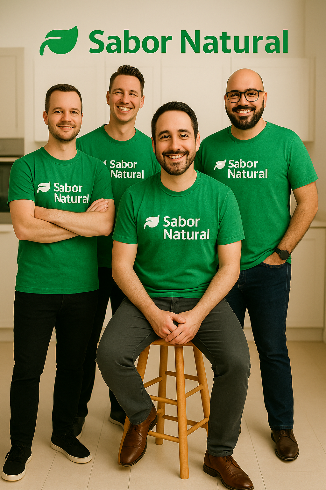

Nossa Jornada
Fundado em 2020, o Sabor Natural nasceu da paixão por alimentação saudável e sustentável. Nossa missão é inspirar pessoas a desenvolverem uma relação mais consciente com a comida.
Através de receitas criativas e nutritivas, buscamos mostrar que comer bem pode ser delicioso e acessível.

Nossos Valores
Paixão
Amor pela culinária saudável
Sustentabilidade
Compromisso com o meio ambiente
Comunidade
Compartilhando conhecimento